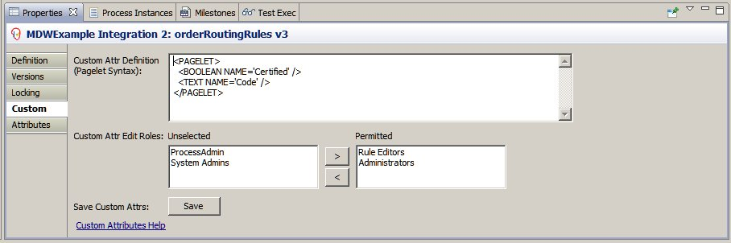
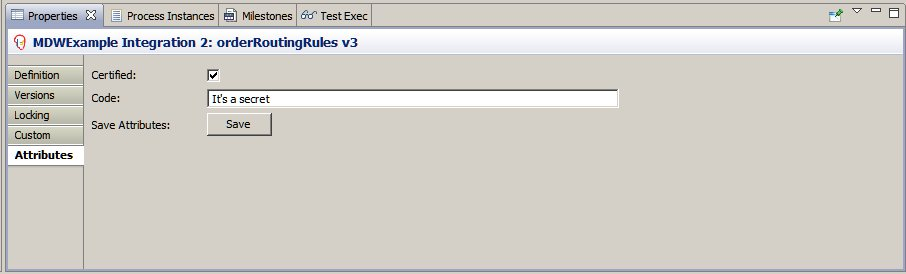

Custom Attributes
MDW has the capability to associate custom attributes with specific types (or "languages") of MDW Assets.
Workflow assets are MDW design artifacts such as Scripts, Templates, Pages, Reports, Rules, and Web Resources.
Setting Up Custom Attributes
If you are authorized for instance-level changes (i.e. you belong to "System Admins" role), you will see a "Custom" tab when you select a definition document in Process Explorer view and show its properties.
This tab enables you to specify your custom attributes along with the UI widgets that will be exposed for editing by end users.
The syntax for specifying the attributes is the <PAGELET/> language described under Activity Implementors.
Here's an example that defines a single boolean attribute called "Certified" controlled by a checkbox:
<PAGELET>
<BOOLEAN NAME='Certified'/>
</PAGELET>
On the "Custom" tab you'll also specify the roles whose users are permitted to modify the attribute values for a specific definition document instance.

User Access
Users who belong to one of the specified roles will see an Attributes tab when they show the properties for a definition document of the specified type.

Design versus Runtime
An important thing to note here is that while the custom attribute design info described in the section above applies for all definition documents of the relevant type (eg: Drools), the end-user entered attribute data applies to one specific instance that they are working on.